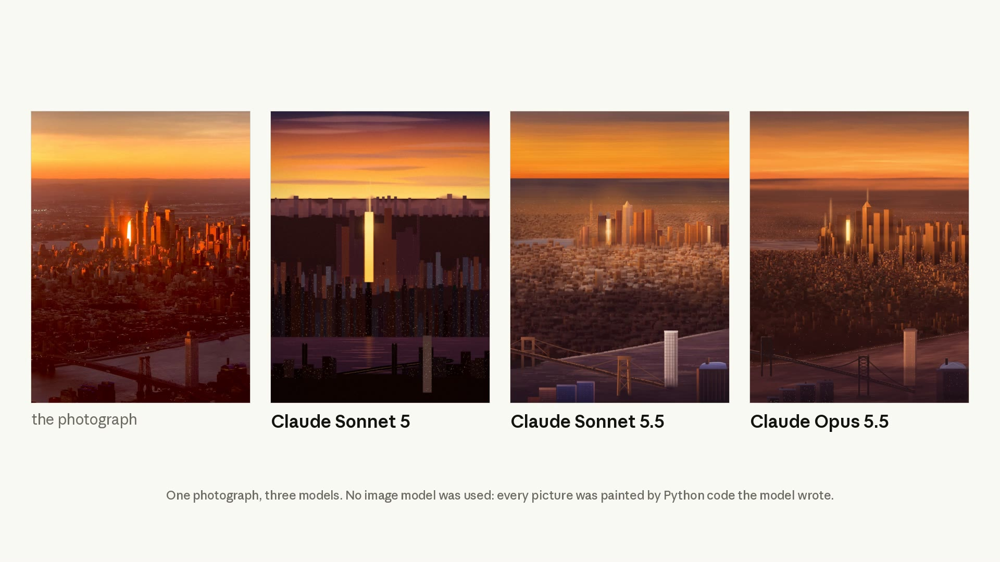

When to choose Sonnet over Opus, what it costs, and how to tune it.
Claude Sonnet 5.5 is our second model in the Claude 5.5 family after Opus 5.5. It's a clear upgrade over Sonnet 5 and is smarter, more efficient and 30% faster. The per-token price is unchanged and because Sonnet 5.5 typically needs far fewer tokens to do the same work, it costs up to 30% less for most work.

Credit to @jkeatn for ideas related to code-to-painting and @IceSolst for the reference image.
This guide is about building with the model. To try it, run this request as written:
import anthropic client = anthropic.Anthropic() response = client.messages.create( model="claude-sonnet-5-5", max_tokens=4096, messages=[ { "role": "user", "content": "Analyze the trade-offs between microservices and monolithic architectures", } ], output_config={"effort": "medium"}, ) for block in response.content: if block.type == "text": print(block.text)
The loop reads each block by type because Sonnet 5.5 thinks by default, so a response can begin with a thinking block, and code that reads content[0].text breaks.
In the Claude 5.5 family, Opus 5.5 is built for complex work requiring careful judgment. Use Sonnet 5.5 for well-scoped everyday tasks like fixing bugs and quickly iterating on features. It also creates polished documents, slides and spreadsheets, and it has a strong eye for design. Its speed makes it well suited to fast iteration. Claude Haiku 5.5 will join the family in the coming weeks for high-volume, low-latency workflows.
| Your workload | Start with |
|---|---|
| Well-scoped everyday coding: fixing bugs, quickly iterating on features, verifying against requirements | Sonnet 5.5 |
| High-volume everyday development | Sonnet 5.5 |
| Polished documents, slides and spreadsheets, such as one-pagers, diagrams, summary slides, document edits and spreadsheet cleanup, where an eye for design helps | Sonnet 5.5 |
| Well-defined agent tasks you run repeatedly: investigation, review, drafting | Sonnet 5.5 |
| Complex work requiring careful judgment, including long-horizon agentic coding and knowledge work | Opus 5.5 |
| The hardest problems, where you need the most intelligence | Opus 5.5 |
"In Epic's early testing, Claude Sonnet 5.5 cleared the same quality bar you'd expect from a higher-tier model, holding up on a system design audit and a data-flow review. The new model managed tens of thousands of lines of code for gameplay system architecture, kept responses snappy, handled multi-hour tasks, and delivered with less prescriptive prompting." (Daniel Vogel, COO, Epic Games)
Sonnet 5.5 fits best when the task has a clear spec and a way to check the result. As the prompting guide puts it, "for the hardest long-horizon work, an Opus model is the better choice."
| Per million tokens | Sonnet 5.5 | Opus 5.5 |
|---|---|---|
| Input | $2 | $4 |
| Output | $10 | $20 |
| Cache write, 5 minutes | $2.50 | $5 |
| Cache write, 1 hour | $4 | $8 |
| Cache read | $0.20 | $0.20 |
All Sonnet 5.5 prices, including batch processing and prompt caching, match Sonnet 5's, so swapping the model ID doesn't change your per-token bill. US-only inference (inference_geo: "us") costs 1.1 times the standard price.
While the per-token price doesn't change, the overall bill will change because, as previously mentioned, Sonnet 5.5 typically uses fewer tokens per task than Sonnet 5.
Note that surfaces can ship with different default efforts for Sonnet, such as high on Claude Platform and medium in Claude Code.
Sonnet 5.5 uses the high-resolution image tier, up to 2576 pixels on the long edge, and a 2000×1500 image costs about 2.5 times as many tokens as on Sonnet 4.6, Sonnet 4.5 or Haiku 4.5. If you don't need the detail, downscale before you send.
| Detail | Sonnet 5.5 |
|---|---|
| Model ID | claude-sonnet-5-5 on the Claude API, Claude Platform on AWS, Google Cloud and Microsoft Foundry; anthropic.claude-sonnet-5-5 on Amazon Bedrock |
| Context window | 1M tokens, native, no beta header |
| Max output | 128k tokens; up to 300k on the Message Batches API with the output-300k-2026-03-24 beta header |
| Knowledge cutoff | June 2026 |
| Thinking | On by default (adaptive thinking); between_tools turns off upfront thinking |
| Effort levels | low, medium, high, xhigh, max |
| Default effort | high on the Claude API; medium in Claude Code |
| Tokenizer | Same as Sonnet 5 |
| Minimum cacheable prompt | 512 tokens (1,024 on Sonnet 5) |
| Rate limits | Separate from Sonnet 5, with the same default tier values |
| Priority Tier | Available on the Claude API |
| Data retention | Available with zero data retention for eligible customers |
The Claude API defaults to high so you start from strong results. Start there, evaluate, and then pick the effort level your workload needs. If you're tempted to use xhigh or max effort, keep in mind that Sonnet 5.5 will think longer and cost more. On some tasks, you may lose some of what makes Sonnet useful: its balance of quality, speed, and cost. In that case, consider Opus 5.5.
Thinking is on by default. If you ran Sonnet 5 with thinking off, you can use between_tools to turn off upfront thinking. Step 1 below shows how.
Change the model ID to claude-sonnet-5-5, then work through five breaking changes and one change to the response shape. The Sonnet 5.5 migration guide covers each one in full.
Claude Code can also do the migration for you. Run /claude-api migrate this project to claude-sonnet-5-5 to invoke the bundled Claude API skill, which applies the model ID swap and the breaking parameter changes across your code base.
On Sonnet 5.5, a request with no thinking field runs with adaptive thinking, and thinking: {"type": "disabled"} returns a 400 error. Send the new between_tools setting instead. With between_tools, thinking only happens between tool calls, and total response time is the same or faster.
# Before: Claude Sonnet 5 client.messages.create( model="claude-sonnet-5", max_tokens=16000, thinking={"type": "disabled"}, output_config={"effort": "xhigh"}, messages=[{"role": "user", "content": "..."}], ) # After: Claude Sonnet 5.5 client.messages.create( model="claude-sonnet-5-5", max_tokens=16000, thinking={"type": "between_tools"}, output_config={"effort": "high"}, messages=[{"role": "user", "content": "..."}], )
The example also drops effort from xhigh to high, because between_tools has these limits:
between_tools works at low, medium and high effort. At xhigh or max it returns a 400 error; to run there, use adaptive thinking.display, budget_tokens or block_binding with it returns a 400 error.between_tools, effort can't change mid-conversation. To vary effort per turn, use adaptive thinking.thinking blocks, with summary text. Read content blocks by type, and pass these blocks back unchanged with the rest of the assistant turn. Without tools, the response contains only text.between_tools, update it.If you turn upfront thinking off with between_tools, use adaptive thinking instead for requests without tools that need a few steps of working out.
tool_choice of type any or tool returns a 400 error, including on the token counting endpoint. Send auto, mark the tool strict: true so its input matches the schema, and say in the prompt when to use it:
weather_tool = { "name": "get_weather", "description": "Get the current weather in a given location", "input_schema": { "type": "object", "properties": {"location": {"type": "string"}}, "required": ["location"], "additionalProperties": False, }, "strict": True, } client.messages.create( model="claude-sonnet-5-5", max_tokens=1024, tools=[weather_tool], tool_choice={"type": "auto"}, # was {"type": "tool", "name": "get_weather"} messages=[ {"role": "user", "content": "What's the weather in Paris? Use the get_weather tool."} ], )
Strict tool use needs additionalProperties: false on every object.
Sonnet 5.5 thinking blocks are tied to the model and the conversation. Sonnet 5.5 reads Sonnet 5's thinking blocks, so a conversation you switch from Sonnet 5 to Sonnet 5.5 keeps its reasoning. No other model reads Sonnet 5.5's blocks.
On the Claude API and Google Cloud, Sonnet 5.5 supports computer use only through {"type": "computer_toolset_20260801"}; a request that declares computer_20251124 returns a 400 error. Drop the anthropic-beta: computer-use-2025-11-24 header from your requests, and in the SDKs, remove the betas parameter and call the Messages API through the standard client rather than the beta namespace. Replace the tools entry, and update your agent loop for member tool_use blocks, batch actions and toolset_name on results. If you send the fine-grained-tool-streaming-2025-05-14 beta header, remove it too, because alongside a toolset entry it returns a 400 error; set eager_input_streaming: true on each tool that needs it instead. Amazon Bedrock still accepts computer_20251124.
With the advisor tool, a Sonnet 5.5 executor rejects Opus 4.8, Opus 4.7 and Sonnet 5 as advisors. Accepted advisors include Opus 5.5, Opus 5 and Sonnet 5.5 itself. Advice from every accepted advisor comes back encrypted, as an advisor_redacted_result block, so your code can't read the advice text.
This change causes no errors, but a UI can stop showing the model's notes between tool calls. Those notes, when longer than a sentence or two, come back as progress-update thinking blocks, which are empty at the default display.
With adaptive thinking, set thinking.display to "updates" (beta, with the thinking-display-updates-2026-08-18 header) or "summarized", and render each non-empty thinking block before the tool_use block that follows it. With between_tools, the text comes back without display.
Sonnet 5.5 also adds per-message effort (beta), mid-conversation system messages and mid-conversation tool changes (beta). If you're moving from Sonnet 4.6 or earlier, or from Haiku 4.5, the migration guide has a checklist for each starting model.
Effort levels are recalibrated, so a level doesn't produce the same amount of thinking as it did on Sonnet 5, and your old setting won't carry over. Start with high unless your workload is agentic or latency-sensitive. For agentic coding and multistep tool use, start with medium for well-specified tasks and move to high for harder or longer ones. For chat and other latency-sensitive work, start with medium or low. Use xhigh or max only where your evals show a quality gain.
Thinking counts toward max_tokens, so leave room. For agentic coding, set max_tokens to 128,000, the model's maximum, and stream the response. To get less thinking, lower the effort level, because asking the model in the system prompt to think less doesn't reliably reduce it.
Existing Sonnet 5 prompts should perform well without changes. If your prompts carry workarounds such as refusal steering, tool-call retry shims, or "do not be lazy," remove them and re-run your evals before tuning anything else.
Sonnet 5.5 generally checks its work before reporting a change as done, but at low effort it sometimes skips a check that exercises the change. If you see changes reported as done without test or build output, the prompting guide recommends this system-prompt paragraph:
When you change code that can be run, built, or type-checked, run a real
check that exercises the change before reporting it done: the project's
tests, type-checker, or build, or the changed command itself. A syntax-only
check, or a check command that failed to start, does not count; if all
that is missing is the project's declared dependencies, install them with
its own package manager and lockfile (e.g. npm install, pip
install -r requirements.txt), never via sudo or the system package manager,
unless told not to. Only if no real check can run here, say which one you
did not run and why instead of reporting the change as done.Don't ask the model to write out its reasoning in the response, because that invites reasoning_extraction declines. Read summarized thinking instead:
thinking={"type": "adaptive", "display": "summarized"}
For user-facing progress notes on their own, use display: "updates" (beta). If you want updates at predictable points, such as a line before the first tool call and a short recap at the end, say so in the system prompt.
The minimum cacheable prompt drops to 512 tokens, so shorter system prompts and tool definitions now qualify. A cache read costs a tenth of the input price. Changing the top-level effort between requests invalidates the cache; to run one turn at a different level, use per-message effort (beta), which keeps the cache.
On our automated behavioral audit, Sonnet 5.5 improves on or matches Sonnet 5 on most measures of alignment and honesty. It's also the first Sonnet model with cybersecurity safeguards similar to those on our most capable models. Most routine software development is unaffected.
A declined request returns HTTP 200 with stop_reason: "refusal", and stop_details names one of five categories: cyber, bio, frontier_llm, reasoning_extraction or general_harms. Server-side fallback (fallbacks: "default", beta, Claude API) retries cyber and frontier_llm declines on Sonnet 5. It doesn't retry the other three. You can also use the SDK middleware or your own retry.
For legitimate security work, the Cyber Verification Program will soon expand to include Sonnet 5.5.
Claude Sonnet 5.5 is available today on the platforms below. On the developer platforms, use these model IDs:
claude-sonnet-5-5anthropic.claude-sonnet-5-5claude-sonnet-5-5claude-sonnet-5-5claude-sonnet-5-5, on Global Standard deployments onlyFrom Claude Code v2.1.284 (Agent SDK for TypeScript v0.3.284 or later), the sonnet alias resolves to Sonnet 5.5 on the Claude API. It runs at medium effort by default, with the 1M context window native. You can't turn thinking off for Sonnet 5.5 in Claude Code, and effort sets how much the model thinks. Sonnet 5.5 has no fast mode. The default model stays Opus 5.5, so switch with /model sonnet for well-scoped tasks.
We hope you'll enjoy trying out Sonnet 5.5 and as always feel free to share feedback.